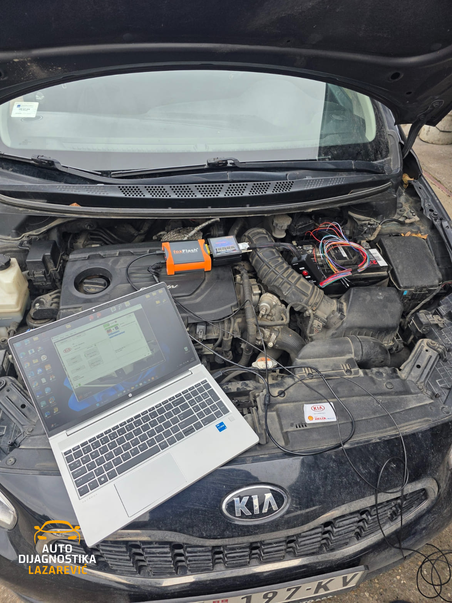

Svetli lampica upozorenja?
Nema nagađanja. Dolazimo do tačnog uzroka kroz profesionalnu dijagnostiku, jasno vam objašnjavamo situaciju, a intervenciju radimo isključivo uz vašu saglasnost. Bez skrivenih troškova.
Van radnog vremena – Pošaljite upitDodirnite lampicu koja svetli na vašoj tabli.
Check engine
Žuta lampica: upozorenje
Šta to obično znači
Računar vozila je zabeležio grešku u radu motora ili emisije. Uzrok može biti bilo šta, od senzora do ubrizgavanja, i vidi se tek iz očitavanja.
Šta radimo
Očitamo sve kontrolne jedinice, pratimo parametre uživo i objasnimo nalaz pre bilo kakve intervencije.
DPF filter
Žuta lampica: upozorenje
Šta to obično znači
Filter čestica se puni čađi i ne uspeva da se regeneriše. Vozilo može preći u režim smanjene snage.
Šta radimo
Proverimo stanje i parametre filtera. Ako vi odlučite, nudimo softversko gašenje DPF sistema bez grešaka.
AdBlue
Žuta lampica: upozorenje
Šta to obično znači
Sistem za AdBlue prijavljuje grešku, na primer zbog senzora. Neka vozila nakon upozorenja odbijaju da upale motor.
Šta radimo
Dijagnostika sistema, zamena i kodiranje senzora, ili softversko gašenje sistema.
EPC
Žuta lampica: upozorenje
Šta to obično znači
Elektronika upravljanja snagom motora je u režimu zaštite i vozilo gubi snagu. Najčešće je u pitanju senzor ili aktuator.
Šta radimo
Očitamo grešku i utvrdimo koja komponenta pravi problem, pa predložimo sledeći korak.
ABS / ESP
Žuta lampica: upozorenje
Šta to obično znači
Sistem protiv blokade točkova je isključen. Obične kočnice rade, ali ABS i ESP ne pomažu.
Šta radimo
Očitamo grešku, proverimo senzore točkova, a po potrebi ih zamenimo i kodiramo.
Grejači
Žuta lampica: upozorenje
Šta to obično znači
Kod dizel motora može značiti ili kvar grejača ili kvar na motoru ukoliko lampica trepće.
Šta radimo
Dijagnostika sistema i očitavanje grešaka, pa utvrđujemo šta treba zameniti.
Servis
Žuta lampica: podsetnik
Šta to obično znači
Servisni interval je istekao ili ga treba resetovati nakon zamene ulja ili kočnica.
Šta radimo
Servisni reset (servisni intervali, ulje, kočnice) radimo u okviru dijagnostike.
Ulje
Crvena lampica: zaustavite vozilo
Šta to obično znači
Crvena lampica znači da vozilo treba zaustaviti čim je bezbedno. Vožnja sa niskim pritiskom ulja može uništiti motor.
Šta radimo
Ako vozilo ne sme da se vozi, dolazimo na vašu adresu i utvrđujemo da li je kvar mehanički ili u senzoru.
Od problema do rešenja
Bez nepotrebnog komplikovanja — prvo utvrdimo problem, zatim dogovaramo konkretno rešenje.
- 1
Poziv
Opišete problem i dogovaramo termin.
- 2
Dijagnostika
Proveravamo greške, parametre i rad sistema.
- 3
Analiza
Objašnjavamo nalaz i predlažemo sledeći korak.
- 4
Rešenje
Izvodimo dogovorenu intervenciju i proveru.
Zašto izabrati nas
Profesionalnost i iskustvo na koje možete računati.
- Profesionalna Oprema
- Koristimo najsavremenije dijagnostičke uređaje i originalne softvere proizvođača vozila.
- Brza Intervencija
- Efikasno rešavanje problema bez nepotrebnog odlaganja. Dolazimo na vašu adresu po dogovoru.
- Garancija Na Uslugu
- Pružamo garanciju na sve izvršene usluge i kvalitet rada koji izvodimo.
- Transparentna Komunikacija
- Jasno objašnjavamo probleme i rešenja. Nijedna intervencija bez vaše saglasnosti.
- Povoljne Cene
- Profesionalna usluga po pristupačnim cenama. Kvalitet ne mora biti skup.
Vozilo ne može da se pomeri?
Nudimo mobilnu dijagnostiku - dolazimo na vašu lokaciju sa kompletnom opremom. Bez potrebe za šlepovanjem vozila.
Pozovite 064 933 7958
Kontaktirajte nas
Imate problem, grešku na tabli ili želite da proverimo vozilo? Javite nam se i dogovorićemo termin koji vam odgovara.
Radno vreme
| Ponedeljak-Petak | 15:00-20:00 |
|---|---|
| Subota | 09:00-12:00 |
| Nedelja | Po dogovoru |
Radimo sa svim markama: VAG grupa, BMW, Mercedes, Renault, Peugeot, Citroën, Fiat, Opel i sve ostale.